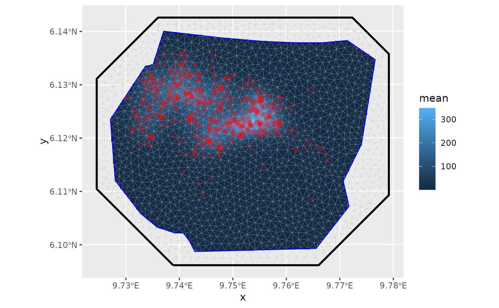

This function performs inference on a LGCP observed via points residing possibly multiple dimensions. These dimensions are defined via the left hand side of the formula provided via the model parameter. The left hand side determines the intensity function that is assumed to drive the LGCP. This may include effects that lead to a thinning (filtering) of the point process. By default, the log intensity is assumed to be a linear combination of the effects defined by the formula's RHS. More sofisticated models, e.g. non-linear thinning, can be achieved by using the predictor argument. The latter requires multiple runs of INLA for improving the required approximation of the predictor. In many applications the LGCP is only observed through subsets of the dimensions the process is living in. For example, spatial point realizations may only be known in sub-areas of the modelled space. These observed subsets of the LGCP domain are called samplers and can be provided via the respective parameter. If samplers is NULL it is assumed that all of the LGCP's dimensions have been observed completely.
lgcp( components, data, samplers = NULL, domain = NULL, ips = NULL, formula = . ~ ., E = NULL, options = list() )
| components | A formula describing the latent components |
|---|---|
| data | A data frame or |
| samplers | A data frame or |
| domain | Named list of domain definitions |
| ips | Integration points (overrides |
| formula | If NULL, the linear combination implied by the |
| E | Single numeric used rescale all integration weights by a fixed factor |
| options |
An bru() object
# \donttest{ if (bru_safe_inla()) { # Load the Gorilla data data(gorillas, package = "inlabru") # Plot the Gorilla nests, the mesh and the survey boundary ggplot() + gg(gorillas$mesh) + gg(gorillas$nests) + gg(gorillas$boundary) + coord_fixed() # Define SPDE prior matern <- INLA::inla.spde2.pcmatern(gorillas$mesh, prior.sigma = c(0.1, 0.01), prior.range = c(0.01, 0.01) ) # Define domain of the LGCP as well as the model components (spatial SPDE # effect and Intercept) cmp <- coordinates ~ mySmooth(map = coordinates, model = matern) + Intercept # Fit the model (with int.strategy="eb" to make the example take less time) fit <- lgcp(cmp, gorillas$nests, samplers = gorillas$boundary, domain = list(coordinates = gorillas$mesh), options = list(control.inla = list(int.strategy = "eb")) ) # Predict the spatial intensity surface lambda <- predict(fit, pixels(gorillas$mesh), ~ exp(mySmooth + Intercept)) # Plot the intensity ggplot() + gg(lambda) + gg(gorillas$mesh) + gg(gorillas$nests) + gg(gorillas$boundary) + coord_fixed() }#>#> Warning: Discarded ellps unknown in Proj4 definition: +proj=longlat +R=1 +no_defs +type=crs#> Warning: Discarded datum unknown in Proj4 definition#> Warning: Discarded ellps unknown in Proj4 definition: +proj=longlat +R=6378137 +no_defs +type=crs#> Warning: Discarded datum unknown in Proj4 definition#> Warning: Discarded ellps unknown in Proj4 definition: +proj=longlat +R=6378137 +no_defs +type=crs#> Warning: Discarded datum unknown in Proj4 definition#> Warning: Discarded ellps unknown in Proj4 definition: +proj=geocent +R=1 +units=m +no_defs +type=crs#> Warning: Discarded datum unknown in Proj4 definition#> Warning: Use of 'map' is deprecated and may be disabled; use 'main' instead.#> Warning: All covariate evaluations for 'Intercept' are NULL; an intercept component was likely intended. #> Implicit latent intercept component specification is deprecated since version 2.1.14. #> Use explicit notation '+ Intercept(1)' instead (or '+1' for '+ Intercept(1)').#> Warning: Discarded ellps unknown in Proj4 definition: +proj=longlat +R=1 +no_defs +type=crs#> Warning: Discarded datum unknown in Proj4 definition#> Warning: Discarded ellps unknown in Proj4 definition: +proj=longlat +R=6378137 +no_defs +type=crs#> Warning: Discarded datum unknown in Proj4 definition#> Warning: Discarded ellps unknown in Proj4 definition: +proj=longlat +R=6378137 +no_defs +type=crs#> Warning: Discarded datum unknown in Proj4 definition#> Warning: Discarded ellps unknown in Proj4 definition: +proj=geocent +R=1 +units=m +no_defs +type=crs#> Warning: Discarded datum unknown in Proj4 definition#> Warning: Discarded ellps unknown in Proj4 definition: +proj=longlat +R=1 +no_defs +type=crs#> Warning: Discarded datum unknown in Proj4 definition#> Warning: Discarded ellps unknown in Proj4 definition: +proj=longlat +R=6378137 +no_defs +type=crs#> Warning: Discarded datum unknown in Proj4 definition#> Warning: Discarded ellps unknown in Proj4 definition: +proj=longlat +R=6378137 +no_defs +type=crs#> Warning: Discarded datum unknown in Proj4 definition#> Warning: Discarded ellps unknown in Proj4 definition: +proj=geocent +R=1 +units=m +no_defs +type=crs#> Warning: Discarded datum unknown in Proj4 definition#># }